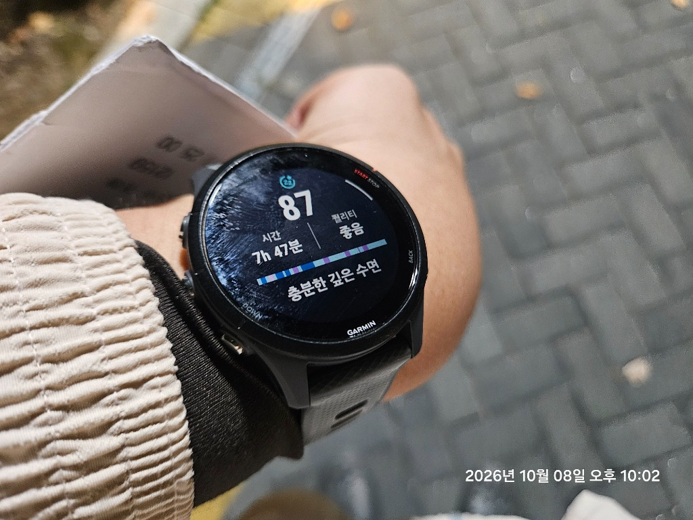
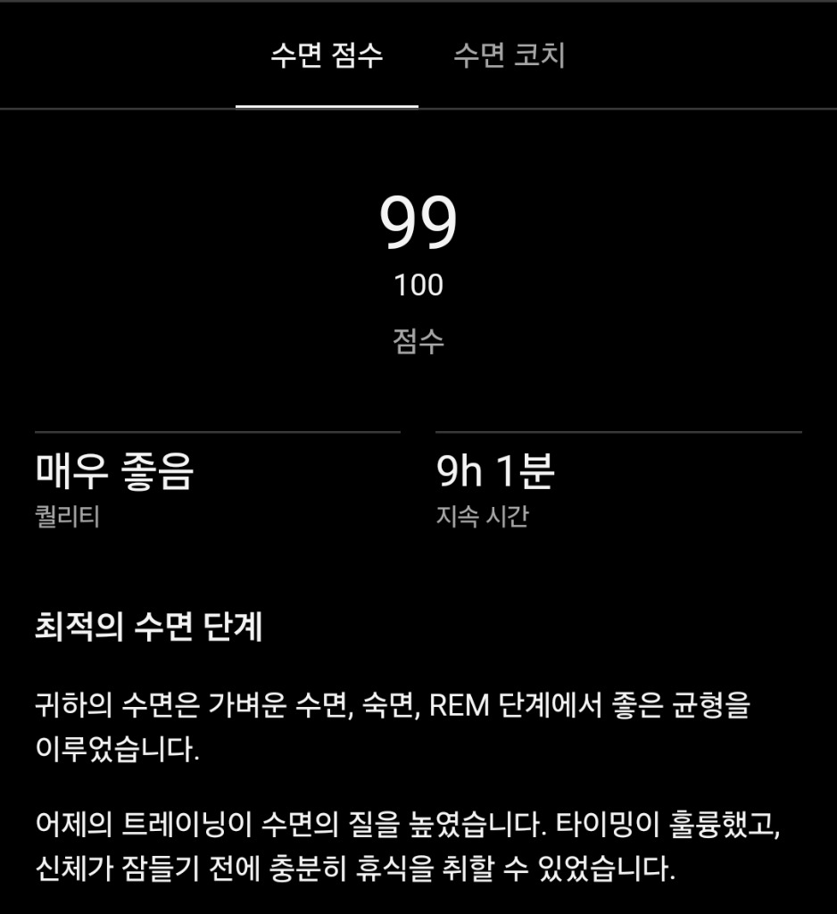

스마트워치 수면 점수와 초회복(Supercompensation): 기기로 측정하는 깊은 수면과 달리기 기록의 상관관계
- 달리기는 근육 섬유를 미세 손상시키는 '파괴'의 과정이며, 실제 심폐 지구력과 근육이 강해지는 '초회복(Supercompensation)'은 100% 잠자는 침대 위에서 일어납니다.
- 가민 수면 점수 85~99점의 핵심 비결은 단순 수면 시간보다 깊은 수면(Deep Sleep)의 비율과 훈련 타이밍(취침 전 심박·체온 하강)에 있습니다.
- 스마트워치 수면 점수가 80점 미만일 때는 인터벌/템포런을 피하고 Zone 2 조깅으로 전환하는 '데이터 기반 훈련 조절'이 마스터즈 부상 방지의 1순위 철칙입니다.
1. 러너의 초회복 곡선: 휴식 없는 훈련은 파멸로 가는 지름길
러닝 입문자들이 가장 흔히 범하는 실수는 "매일 열심히 뛰어야 실력이 는다"는 강박입니다. 하지만 스포츠 생리학에서 체력 향상은 [자극(훈련) ➔ 피로 및 손상 ➔ 회복 ➔ 초회복(Supercompensation)]이라는 4단계 사이클을 거칩니다.
강도 높은 훈련 직후 우리 몸은 일시적으로 체력 곡선이 바닥으로 곤두박질칩니다. 이때 적절한 영양과 양질의 수면이 주어지면, 신체는 다음번 스트레스에 대비하기 위해 원래 체력 수준보다 더 높은 단계로 자신을 재건축합니다. 이 정점의 상태를 바로 '초회복'이라고 부릅니다.
만약 초회복이 오기 전에 피로가 누적된 상태에서 또다시 달린다면, 체력 곡선은 우하향하며 건염(아킬레스, 족저근막)과 피로 골절, 만성 피로증후군으로 직결됩니다.
2. 🏃 직접 기록해본 스마트워치 수면 데이터: 87점과 99점의 차이를 돌아보며
예전에는 단순히 "오늘 아침 개운한가?"라는 주관적인 느낌만 살폈지만, 스마트워치를 차고 자면서 심박변이도(HRV)와 수면 단계 데이터를 함께 관찰해보니 훈련과 회복의 연결고리가 조금씩 눈에 들어오기 시작했습니다.

• 지속 시간: 7시간 47분
• 특징: "충분한 깊은 수면" 막대가 채워진 날. 9km 분할 러닝 후 신체가 무리 없이 회복을 시작할 수 있었던 안정적인 상태입니다.

• 지속 시간: 9시간 1분
• 가민 코치 코멘트: "어제의 트레이닝이 수면의 질을 높였습니다. 타이밍이 훌륭했고, 신체가 잠들기 전에 충분히 휴식을 취할 수 있었습니다."
💡 코치 코멘트에서 배운 점: '운동 타이밍'의 중요성
99점이 찍혔던 날의 코멘트를 보면 "타이밍이 훌륭했고, 신체가 잠들기 전에 충분히 휴식을 취할 수 있었다"는 분석이 있었습니다. 격렬한 달리기 직후에는 교감 신경이 활성화되어 있고 체온도 올라가 있습니다. 충분한 서파 수면(숙면)을 얻기 위해서는 잠들기 최소 3~4시간 전에 훈련을 마치고 몸을 차분히 식히는 시간을 확보하는 것이 큰 도움이 되었습니다.
3. 수면 단계별 회복 생리학: 왜 깊은 수면(Deep Sleep)을 주목하게 될까?
4. 수면 점수를 참고하며 시도해보는 데일리 컨디션 관리
🚦 아침 수면 점수를 보고 달리기 강도를 조율하는 팁
-
🟢 85점 이상:
몸이 충분히 회복된 상태입니다. 계획했던 페이스주나 템포런을 부담 없이 시도해볼 수 있습니다. -
🟡 70~84점:
일반적인 컨디션입니다. 기록 단축보다는 편안한 조깅(Zone 2) 위주로 기분 좋게 달리는 것을 권장합니다. -
🔴 70점 미만:
수면이 부족했거나 몸에 피로가 남아있는 상태입니다. 억지로 뛰어나가기보다는 가벼운 스트레칭이나 완전 휴식을 선택하는 것이 부상을 예방하는 현명한 방법입니다.
📅 오늘 내 컨디션에 딱 맞는 7일 훈련 일정표
RunAnalyz 훈련 플래너는 당신의 현재 체력 수준과 회복 주기에 맞추어, 부상 없이 빨라지는 주간 훈련 메뉴를 캘린더에 담아드립니다.
📅 이번 주 7일 맞춤 훈련 플래너 확인하기